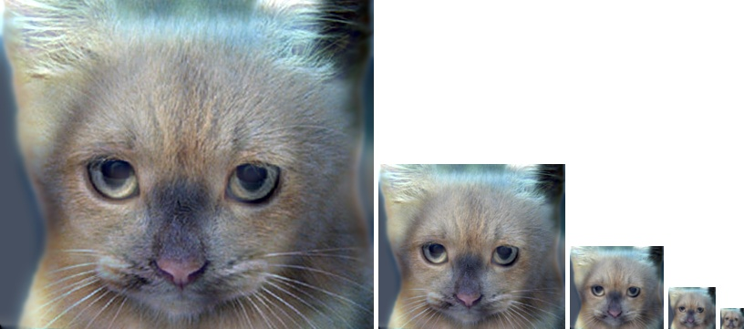
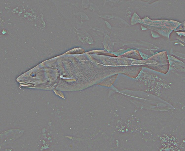

CS 4495 / 6476 Project 1: Image Filtering and Hybrid Images
This report starts with types and techniques in image filtering and explains the same with an example. It then goes on to describe the processes involved in creation of hybrid images from a pair of images. It ends by showing tabular results of five pairs of images on which various filtering operations are performed and hybrid images are created.
Image Filtering
Image filtering in spatial domain can be done with filters of odd dimensions with the center value aligned with the image pixel (A filter wth even dimensions leads to ambiguity in deciding the center pixel and are therefore not used.). A sum of product of elements in filter and the corresponding subset of elements image result in pixel value of the filtered image. The filter dimensions may overshoot the pixels in image (especially on corners and edges). For this reason, images have to be padded before filtering operation is performed. Padding can be done either with zero pixels or with pixels of image itself formed by borders of rows and columns as mirrors. Since the filter is passed only on the pixels of original image, the resolution of the filtered image will remain identical to original image.
Low frequency filters like box filter and Gaussian filter tend to blur the image. High frequency filters like Sobel filter and Discrete Laplacian filter tend to focus on areas of images with difference in intensity, thereby acting as good edge detectors. The following set of images shows the result of Box filter, Gaussian filter, Sobel filter, and Discrete Laplacian filter (from left to right) on a colored image of a bicycle.
Hybrid Image Generation
The below table contains the results of filtering and hybrid generation on a set of five image pairs. First column of images are formed by filtering the original images by applying a low pass Gaussian filter with different free parameter (sigma) value for each of them. Second column shows the result of removing the low frequency Gaussian filter (of the same free parameter value as the one used on first image) on the second image from its original form; this results in a high frequency filtering operation on this image. The third column shows the resultant hybrid image obtained by combining the low frequency first image and the high frequency seond image. As the properties of hybrid images suggest, high frequency component image has a dominating effect on vision when viewed from close distances or the image resolution is big; in a similar fashion, low frequency component image dominates when hybrid image is viewed from a distance far away or when the image resolution is low. This can be visualized by using a technique called 'Progressive downsampling', which is essentially reducing the image resolution by decresing the pixel count in image, at the same time, retaining the overall visual effect (of the image itself).
Table: Results of filtering and hybrid formation
|  |

|
|  |

|